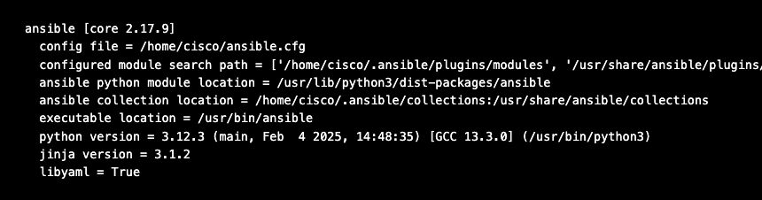
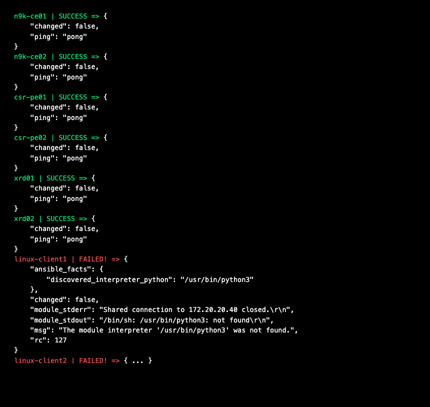

Lab Readiness¶
Complete these steps before starting Task 1. This sets up your environment and verifies everything is working.
Step 1: Open Your Terminal¶
If you completed Lab Access, your terminal is already open in VS Code with the prompt cisco@ubuntu:~$. Use that same terminal for all commands in this guide.
Not set up yet? Go to Lab Access first — it walks you through VPN, VS Code Remote-SSH, and opening your terminal.
Step 2: Clone the Lab Repository¶
The lab files need to live directly in your home directory (/home/cisco/)
because the Ansible configuration expects them there. Since the home directory
already has other files in it, we clone into a temporary folder first, then
move everything into place.
2a. Make sure you are in your home directory:
2b. Clone the repository into a temporary folder:
Note: Your instructor will provide the
<TOKEN>value. This is a shared access token that allows everyone to clone and push to the repository.
2c. Move all files (including hidden .git folder) from the temporary folder
into your home directory, then remove the empty temporary folder:
The
2>/dev/nullsuppresses harmless warnings about.and..— you can safely ignore any that appear.
2d. Create your own branch. Replace XX with your student number
(e.g., student-01, student-12):
2e. Verify the files are in place:
You should see all three files listed without errors:
What did you just clone? The repository contains: -
ansible.cfg— Ansible configuration (tells Ansible where the inventory is) -inventory.yml— All 10 devices with IPs, credentials, and connection settings -ce-access-vlan.yml— Task 1 playbook (VLANs) -igp-pe-ce.yml— Task 2 playbook (IS-IS) -inter-as-option-a.yml— Task 3 playbook (BGP VPN) -task4-terraform/— Terraform files for Task 4 (IOS-XR via gNMI) -task5-terraform/— Terraform files for Task 5 (Docker + IOS-XE via RESTCONF) -solutions/— Completed playbooks and Terraform configs (if you get stuck)
Step 3: Verify Ansible Is Working¶
You should see Ansible core 2.x with Python 3.x:

Key check: Make sure
config filepoints to/home/cisco/ansible.cfg. If it saysNone, the file didn't land in the right place — re-check Step 2.
Step 4: Verify Terraform Is Working¶
You should see Terraform v1.x.x:
You won't use Terraform until Task 4, but verifying it now catches any issues early.
Step 5: Understand the Inventory¶
The inventory file defines all the devices Ansible will manage. Open it:
Notice how devices are organized into groups (xrd, csr, nxos,
linux). Each group has platform-specific connection settings. This is how
Ansible knows which module and transport to use for each device type.
Key things to notice:
- ansible_network_os tells Ansible which platform collection to use
- ansible_connection: network_cli means Ansible connects via SSH and
sends CLI commands (just like you would manually)
- Different devices use different SSH authentication (keys vs passwords) —
Ansible handles this transparently
Automation Insight: This inventory file is your single source of truth. Every IP, every credential, every platform mapping — one file. When a device gets replaced or an IP changes, you update it here and every playbook automatically picks up the change.
Step 6: Test Connectivity¶
This is the most important pre-check. Run:
The 6 network devices should return SUCCESS. The 4 Linux clients will
FAIL — this is expected and explained below.

Why do the Linux clients fail? Don't worry — this is expected. The
pingmodule requires Python on the remote host, but our Linux containers are minimal Alpine images with no Python installed. That's why you see"/usr/bin/python3: not found". This does not mean Ansible can't manage them. Our playbooks use therawmodule for Linux tasks, which sends commands directly over SSH without needing Python. You'll see this in action in Tasks 1 and 2.
If any of the 6 network devices show UNREACHABLE, let your instructor
know — a device may still be booting or SSH keys may need to be re-injected.
What just happened? The
pingmodule doesn't send ICMP — it verifies Ansible can connect to each device via SSH and execute a simple command. It's a connectivity health check for your automation, not a network ping.
Step 7: Open the Reference Tables¶
Open the Reference Tables in a separate browser tab (or keep it visible in VS Code). You'll use these tables throughout the lab to look up VLAN IDs, IP addresses, BGP AS numbers, and IS-IS NET addresses.
| Table | Used In |
|---|---|
| Table 1: VLAN Assignments | Task 1 |
| Table 2: IP Addressing | Tasks 2, 3, 4 |
| Table 3: BGP Peering | Tasks 3, 4 |
| Table 4: IS-IS Configuration | Task 2 |
Pre-Flight Checklist¶
Before starting Task 1, confirm all of the following:
- [ ] Connected to the lab server — VS Code shows
SSH: 198.18.134.90in blue and terminal prompt iscisco@ubuntu:~$ - [ ] Repository cloned and files are in
/home/cisco/ - [ ]
ansible --versionshows Ansible core 2.x - [ ]
terraform --versionshows Terraform v1.x - [ ]
ansible.cfgconfig file path is/home/cisco/ansible.cfg - [ ]
ansible all -m ping— 6 network devices return SUCCESS - [ ] Reference tables are open and accessible
- [ ] You know how to edit files (VS Code or
nano)
All green? You're ready for Task 1!